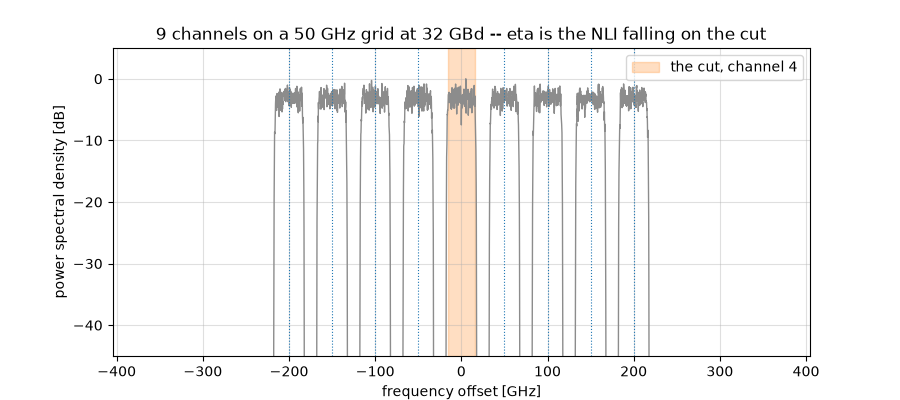

Nonlinear Performance and the Gaussian Noise Model#
In this tutorial we answer the question every optical link designer has to answer – how much power should I launch? – twice, in that order. First with closed-form expressions that take microseconds and propagate nothing at all. Then by actually simulating the fibre, at about a second per point, to find out whether the first answer was any good.
That order matters. The GN model is a prediction, and a prediction has to be stated before it is checked; otherwise the check is a curve fit with extra steps.
Note
Before you start. This is the first of two tutorials on the optical fibre, and the only channel of the series that is nonlinear. It asks how much damage the nonlinearity does and what launch power minimizes it; Digital Back-Propagation then asks how to repair that damage rather than budget for it.
What you’ll learn:
Why an optical link has an optimum launch power, and why turning the laser up eventually makes things worse.
What the Gaussian Noise (GN) model is, in one equation, and how to use it without simulating anything.
Where the factor of two lives in a dual-polarization link – in the launch power, in the amplifier noise, and in the model’s own coefficient.
How well a closed form replaces a split-step simulation – measured, on the same axes.
The one thing the model cannot see, and how big it is.
Introduction#
A fibre span attenuates. An amplifier puts the power back and adds spontaneous-emission noise, so over \(N_s\) spans the receiver sees a fixed noise power \(P_{\mathrm{ASE}}\). That alone would say: launch as much power as the laser can give, since the signal grows and the noise does not.
The fibre disagrees. Its refractive index depends on the intensity travelling through it – the Kerr effect – so the signal distorts itself, and the distortion grows faster than the signal does. After enough uncompensated dispersion the propagating waveform looks like Gaussian noise to itself, and the distortion it produces behaves like one more additive noise. That is the whole content of the GN model, and it makes the link an additive-noise channel with two terms:
The numerator is linear in the launch power and the second term of the denominator is cubic, so there is a best \(P\) and it is not the largest one. Everything below follows from that single expression.
Prerequisites#
Make sure you have the following Python libraries installed:
numpy
matplotlib
comnumpy
Import Libraries#
import numpy as np
import matplotlib.pyplot as plt
from comnumpy import monte_carlo
from comnumpy.core import Sequential
from comnumpy.core.compensators import DataAidedComplexGainCompensator
from comnumpy.core.filters import SRRCFilter
from comnumpy.core.generators import GaussianGenerator, SymbolGenerator
from comnumpy.core.mappers import SymbolMapper
from comnumpy.core.metrics import compute_effective_snr
from comnumpy.core.processors import Amplifier, Downsampler, Upsampler
from comnumpy.core.utils import Constellation
from comnumpy.optical.dbp import DBP
from comnumpy.optical.fiber import FiberSpec
from comnumpy.optical.gn_model import (gn_model_nli_power, gn_model_snr,
optimal_launch_power)
from comnumpy.optical.links import FiberLink
from comnumpy.optical.utils import (dbm_to_watt, launch_amplitude,
watt_to_dbm)
from comnumpy.optical.wdm import WDMGrid
from comnumpy import style
style.use()
Define Parameters#
Five 100 km spans of standard single-mode fibre, PM-16QAM at 32 GBd on a 50 GHz grid.
img_dir = "../../docs/tutorials/img/"
SMF = FiberSpec(0.2, gamma=1.3, cd_coefficient=17.0, wavelength_nm=1550.0)
BAUD = 32e9
SPAN_KM = 100.0
N_SPANS = 5
NF_dB = 6.0
SPACING = 50e9
OS = 4
N_SYM = 4096
ROLLOFF = 0.1
FS = BAUD * OS
STIMULUS = (2, N_SYM)
Part 1: the prediction#
Nothing in this part propagates a sample. Three closed forms answer the design question, and each is a function the library already provides.
# Part 1 -- the prediction, with no signal propagated at all
# ===========================================================================
def comb(n_channels):
"""The channel layout, as an object rather than an arithmetic expression."""
return WDMGrid.uniform(n_channels, spacing_Hz=SPACING,
bandwidth_Hz=BAUD * (1 + ROLLOFF),
center_Hz=SMF.carrier_frequency_Hz)
def comb_eta(n_channels):
"""The eta of P_NLI = eta P^3, for a comb of identical channels."""
grid = comb(n_channels)
nli = gn_model_nli_power(SMF, span_length_km=SPAN_KM, n_spans=N_SPANS,
powers_W=np.full(n_channels, 1e-3),
frequencies_Hz=np.asarray(grid.frequencies_Hz),
baud_rates_Hz=np.full(n_channels, BAUD))
return nli[n_channels // 2] / (1e-3) ** 3
def analytic_ase(n_spans=N_SPANS, bandwidth_Hz=BAUD):
"""Amplifier noise in the channel, over both polarizations.
The link budgets its own noise. ``polarizations=2`` is the term the
channel-power convention makes easy to forget: the spectral density
of an amplifier is **per polarization**, and a coherent link carries
two independent copies of it.
"""
link = FiberLink(n_spans, L_span=SPAN_KM, fs=FS, fiber=SMF, NF_dB=NF_dB)
return link.budget(bandwidth_Hz, polarizations=2)["ase_power_W"]
Three things deserve a word.
comb returns a WDMGrid rather than an
array of frequencies. A grid is an object that can be asked questions – its
guard band, the sampling rate a simulation of it would need – and the rest
of this page asks it several.
comb_eta passes channel powers, not per-polarization powers. That is
the GN model’s convention, and the first of three places a factor of two
hides in this tutorial.
analytic_ase is the second, and it does not compute anything: it asks
the link. budget() returns the noise
that same block will add during propagation, integrated over the bandwidth a
receiver keeps. That is deliberate: in Part 2 this prediction is compared
against a measurement through the whole chain, and had the prediction used a
formula retyped from a textbook, the comparison would only be checking the
transcription. Asking the link makes the comparison test the chain instead
– the spectral density, the bandwidth, the two polarizations, the matched
filter.
polarizations=2 is where the factor lives. A spectral density is per
polarization, and an amplifier emits into both, each with its own
independent noise; writing that product by hand at every call site is how
two pages end up quoting budgets 3 dB apart.
Warning
The 3 dB that becomes 9 dB. power_W is the power of the
channel, summed over both polarizations, because that is the convention
the GN model uses. Each polarization therefore carries half of it, which
is what launch_amplitude(..., polarizations=2) is for in Part 2. Give
each polarization the full power_W instead and you launch 3 dB more
than you think; since the
nonlinear interference goes as the cube of the power, your simulation
then reports 9 dB more of it than the model predicts, and the model
looks broken when it is not.
The same trap has a third door, the model’s own coefficient.
FiberLink reads the shape of the field to
decide which equation to integrate: a field (..., 2, N) gets the
Manakov equation, which is what a real fibre with random birefringence
does and what the model’s 16/27 coefficient assumes; a one-dimensional
field gets the scalar equation instead, which produces 27/8 – 5.3 dB
– more interference at the same total power. If you must compare against
a scalar simulation, tell the model so with
gn_model_nli_power(..., polarizations=1).
What the model is looking at#
A grid is a layout, so plot() draws it
directly – no signal synthesised, no spectrum estimated, and no pulse-shape
roll-off smearing the very guard band the figure exists to show.
grid = comb(9)
grid.plot(cut=grid.n_channels // 2)
plt.savefig(f"{img_dir}/gn_model_fig1.png")
print(f"comb: {grid.n_channels} channels, {grid.guard_Hz / 1e9:.1f} GHz of "
f"guard, {grid.min_fs / 1e9:.0f} GHz to simulate")
eta = comb_eta(1)
ase_W = analytic_ase()
best_power, best_snr = optimal_launch_power(ase_W, eta)
print(f"\neta = {eta:.4g} /W^2 (GN model, one channel)")
print(f"P_ASE = {watt_to_dbm(ase_W):+.2f} dBm "
f"({N_SPANS} spans, NF = {NF_dB:.0f} dB, both polarizations)")
print(f"optimum = {watt_to_dbm(best_power):+.2f} dBm "
f"SNR = {10 * np.log10(best_snr):.2f} dB")
print(f"check : eta P^3 / (P_ASE/2) = "
f"{eta * best_power ** 3 / (ase_W / 2):.6f}")

comb: 9 channels, 14.8 GHz of guard, 435 GHz to simulate
eta = 1223 /W^2 (GN model, one channel)
P_ASE = -20.88 dBm (5 spans, NF = 6 dB, both polarizations)
optimum = +1.74 dBm SNR = 20.86 dB
check : eta P^3 / (P_ASE/2) = 1.000000
Two things read off the figure. The cut is the filled channel: the one
whose noise \(\eta\) counts. Every other one is an interferer, and the
model adds up what each deposits on the cut – so the weights of
gn_model_nli_power() are one per pair
visible here. The cut is the middle channel because that is the worst case,
neighbours on both sides.
The second is the guard: 14.8 GHz separates the boxes, so no channel overlaps its neighbour and nothing linear crosses between them. Everything the model computes is therefore nonlinear leakage – the fibre mixing channels that never touched in frequency, which is the whole reason a closed form for it is worth having.
The design point falls out of the same expression. Setting the derivative of \(P/(P_{\mathrm{ASE}} + \eta P^3)\) to zero gives a rule worth remembering in words – the optimum is where the fibre’s noise is half the amplifiers’:
The last printed line is that rule checked rather than asserted. Two consequences fall out of it. The peak is asymmetric – one side governed by a linear term, the other by a cubic one – so missing the optimum by 1 dB costs 0.24 dB of SNR upwards but only 0.21 dB downwards, and by 3 dB it is 2.20 dB against 1.50 dB. Operators consequently run slightly under the optimum, where a power error is the cheaper kind. And since \(P_{\mathrm{opt}}\) grows only as the cube root of the accumulated ASE, ten times the spans moves the optimum by 3.3 dB, not by 10.
Filling the band#
Here is a question a simulation cannot afford. What happens when the channel is not alone, but sits in the middle of a comb filling the amplifier band?
fine_powers = np.logspace(-1.0, 0.6, 400) * 1e-3
print("\nchannels NLI at 0 dBm optimum peak SNR fs to simulate it")
counts = [1, 3, 9, 27, 81]
curves = {}
for n_channels in counts:
channel_eta = comb_eta(n_channels)
power, snr = optimal_launch_power(ase_W, channel_eta)
curves[n_channels] = 10 * np.log10(
gn_model_snr(ase_W, channel_eta, fine_powers))
print(f"{n_channels:8d} "
f"{watt_to_dbm(channel_eta * (1e-3) ** 3):+8.2f} dBm "
f"{watt_to_dbm(power):+6.2f} dBm {10*np.log10(snr):6.2f} dB "
f"{comb(n_channels).min_fs/1e12:11.2f} THz")
channels NLI at 0 dBm optimum peak SNR fs to simulate it
1 -29.12 dBm +1.74 dBm 20.86 dB 0.04 THz
3 -26.52 dBm +0.88 dBm 20.00 dB 0.14 THz
9 -24.83 dBm +0.31 dBm 19.43 dB 0.44 THz
27 -23.60 dBm -0.10 dBm 19.02 dB 1.34 THz
81 -22.65 dBm -0.42 dBm 18.71 dB 4.04 THz
The last column is why this part exists. It is
min_fs, the sampling rate a split step
would need for that very comb – so the grid prices its own simulation.
Eighty-one channels would need 4.04 THz, a hundred times the single
channel, and hours of computation. The closed form answers in microseconds.
Note also how gently the damage grows: eighty times the interferers costs 2.2 dB. Eight neighbours hurting the cut as much as it hurts itself would cost \(10\log_{10}(1 + 2 \times 8) = 12.3\) dB; the \(\mathrm{asinh}\) in the model turns that into a few tenths. Nonlinear interference accumulates logarithmically in the number of channels, which is the single most useful thing the GN model has to say.
_, ax = plt.subplots(figsize=(7, 5), layout="constrained")
for n_channels in counts:
ax.plot(watt_to_dbm(fine_powers), curves[n_channels],
label=f"{n_channels} channels")
ax.set_xlabel("launch power per channel [dBm]")
ax.set_ylabel("SNR [dB]")
ax.set_title("Filling the band, in closed form only")
ax.legend()
ax.grid(True, alpha=0.4)
plt.savefig(f"{img_dir}/gn_model_fig2.png")

Part 2: the check#
Everything above is a prediction. Now we propagate samples and find out.
# ===========================================================================
# Part 2 -- the simulation, which is here to disagree
# ===========================================================================
def get_chain(order=16, power_W=1e-3):
"""The whole link, from symbols to equalized symbols, as one chain."""
source = ([GaussianGenerator(1.0, name="tx")] if order is None else
[SymbolGenerator(order, name="source"),
SymbolMapper(Constellation("QAM", order), name="tx")])
return Sequential([
*source,
Amplifier(launch_amplitude(power_W, polarizations=2), name="launch"),
Upsampler(OS, scale=np.sqrt(OS)),
SRRCFilter(ROLLOFF, OS, N_h=40, method="fft"),
FiberLink(N_SPANS, L_span=SPAN_KM, StPS=40, fs=FS, fiber=SMF,
NF_dB=NF_dB, name="fibre"),
DBP(N_SPANS, L_span=SPAN_KM, StPS=1, fs=FS, fiber=SMF,
use_only_linear=True, name="dbp"),
SRRCFilter(ROLLOFF, OS, N_h=40, method="fft", scale=1 / np.sqrt(OS)),
Downsampler(OS),
], taps=["tx"], name=f"{N_SPANS} x {SPAN_KM:.0f} km SMF")
def effective_snr_dB(sent, received):
"""SNR once the complex gain a receiver would remove is removed."""
compensator = DataAidedComplexGainCompensator(sent, shared=True)
corrected = compensator(received)
return compute_effective_snr(sent, corrected, unit="dB")
def measure(chain, powers_W, seed=3):
return monte_carlo(chain, "launch.gain",
launch_amplitude(powers_W, polarizations=2),
{"snr_dB": effective_snr_dB}, STIMULUS,
reference="tx", seed=seed)["snr_dB"]
flowchart LR
source["SymbolGenerator"]
tx["SymbolMapper"]
launch["Amplifier"]
upsampler["Upsampler"]
srrcfilter["SRRCFilter"]
fibre["FiberLink"]
dbp["DBP"]
srrcfilter_2["SRRCFilter"]
downsampler["Downsampler"]
source --> tx
tx --> launch
launch --> upsampler
upsampler --> srrcfilter
srrcfilter --> fibre
fibre --> dbp
dbp --> srrcfilter_2
srrcfilter_2 --> downsampler
classDef tapped stroke-dasharray: 4 2
class tx tapped
launch_amplitude(power_W, polarizations=2) is the factor of two of the
warning above, named rather than written: \(\sqrt{P/2}\) of field per
polarization for a channel power \(P\).
name="launch" and name="fibre" are what let the rest of the page
reconfigure the link instead of rebuilding it: chain.set_params reaches
a block by its identifier and re-runs its precomputation (decision D34), and
monte_carlo() drives "launch.gain" over a list of values the
same way. One chain, built once, answers every question below.
taps=["tx"] marks the mapper output as readable from outside the chain –
the dashed box in the diagram, decision D33c. The transmitted symbols are
what every measurement compares against.
“How much noise is there?” has a subtle answer when part of the damage is a
phase rotation. The Kerr effect rotates the constellation by the mean
nonlinear phase, and a real receiver removes that with its carrier-phase
estimator – so counting it as noise would be charging the link for an
impairment nobody suffers.
DataAidedComplexGainCompensator fits
exactly one complex scalar against the reference, which absorbs the rotation
and any gain; compute_effective_snr() then lumps
everything left over into one equivalent additive term.
shared=True is not a detail. The nonlinear phase comes from the total
intensity, so it is common to the two polarizations – a shared estimand
in the sense of decision D49, which is why one gain is fitted jointly over
both rather than one per row. Fitted per row it would be two estimates of the
same number, each seeing half the data. Without the keyword the compensator
refuses a two-path signal outright, so the choice has to be made on purpose
rather than settled by broadcasting.
Does the amplifier noise match?#
Before testing the nonlinear prediction, test the linear one. Setting
fibre.use_only_linear removes the Kerr term and leaves loss and
amplifiers, so the only noise left is the one Part 1 predicted in closed
form. At 0 dBm launch the measured SNR is \(-P_{\mathrm{ASE}}\) in dBm.
chain = get_chain()
chain.summary(STIMULUS)
chain.set_params(fibre__use_only_linear=True)
measured_ase_W = dbm_to_watt(-measure(chain, [dbm_to_watt(0.0)])[0])
gap_dB = watt_to_dbm(measured_ase_W) - watt_to_dbm(ase_W)
print(f"\nP_ASE predicted {watt_to_dbm(ase_W):+.2f} dBm "
f"measured {watt_to_dbm(measured_ase_W):+.2f} dBm "
f"gap {gap_dB:+.2f} dB")
assert abs(gap_dB) < 0.3, gap_dB
P_ASE predicted -20.88 dBm measured -20.95 dBm gap -0.07 dB
0.07 dB, and the script asserts it. That number is worth more than it looks. The prediction is a spectral density times a bandwidth times two polarizations; the measurement is a full chain – pulse shaping, five spans of split-step propagation, back-propagation, matched filtering, sampling and a least-squares gain fit. They agree to two hundredths of a decibel, which says the polarization convention is the same on both sides, that the matched filter really does collect the symbol-rate bandwidth, and that no factor of two got lost between the two.
It is also what makes the nonlinear comparison below meaningful. If \(P_{\mathrm{ASE}}\) were wrong by a factor of two, the optimum would move by \(2^{1/3}\), a full decibel, and the model would look mis-calibrated for a reason having nothing to do with the fibre.
The expensive way#
Now the nonlinear term, at fourteen launch powers.
chain.set_params(fibre__use_only_linear=False)
powers_dBm = np.arange(-8.0, 5.1, 1.0)
measured_snr_dB = measure(chain, dbm_to_watt(powers_dBm))
predicted_snr_dB = 10 * np.log10(gn_model_snr(ase_W, eta, fine_powers))
print(f"optimum {watt_to_dbm(best_power):+.2f} dBm predicted, "
f"{powers_dBm[int(np.argmax(measured_snr_dB))]:+.1f} dBm measured; "
f"peak SNR {10 * np.log10(best_snr):.2f} dB predicted, "
f"{np.max(measured_snr_dB):.2f} dB measured")
_, ax = plt.subplots(figsize=(7, 5), layout="constrained")
ax.plot(watt_to_dbm(fine_powers), predicted_snr_dB, "-",
label="GN model (closed form, microseconds)")
ax.plot(powers_dBm, measured_snr_dB, "o",
label="split-step simulation, ~1 s per point")
ax.plot(watt_to_dbm(fine_powers),
10 * np.log10(fine_powers / ase_W), ":", color="0.5",
label="amplifiers alone ($P/P_{ASE}$)")
ax.axvline(watt_to_dbm(best_power), color="0.3", linestyle="--", linewidth=1)
ax.annotate(f"optimum {watt_to_dbm(best_power):+.1f} dBm",
(watt_to_dbm(best_power), np.min(predicted_snr_dB) + 1),
rotation=90, va="bottom", ha="right", color="0.3")
ax.set_xlabel("launch power per channel [dBm]")
ax.set_ylabel("SNR [dB]")
ax.set_title(f"PM-16QAM, {BAUD/1e9:.0f} GBd, {N_SPANS} x {SPAN_KM:.0f} km SMF")
ax.set_ylim(np.min(measured_snr_dB) - 2, np.max(predicted_snr_dB) + 2)
ax.legend()
ax.grid(True, alpha=0.4)
plt.savefig(f"{img_dir}/gn_model_fig3.png")
optimum +1.74 dBm predicted, +2.0 dBm measured;
peak SNR 20.86 dB predicted, 21.07 dB measured
{kind=link}

The two curves land on top of each other. The optimum is predicted within the 1 dB resolution of the sweep, and the peak SNR within 0.21 dB – for a closed form that ran in microseconds against a simulation that took about a second per point.
The dotted line is the link with the fibre’s nonlinearity ignored, \(P/P_{\mathrm{ASE}}\): the answer you get by trusting the amplifiers alone. It keeps climbing forever. Everything between it and the measured points is what the Kerr effect costs, and the gap only opens past the optimum – which is exactly the regime an operator has to avoid, and exactly the one the closed form was built to describe.
Note
These numbers belong to this link. Digital Back-Propagation propagates a different one – ten spans instead of five, a 5 dB noise figure instead of 6, and a single polarization – and measures a peak of 17.4 dB near \(-1.5\) dBm. Nothing disagrees; the closed form evaluated there predicts 18.8 dB at \(-1.35\) dBm, and that page plots it. Three changes take one to the other:
5 spans, NF 6 dB, dual polarization optimum +1.74 dBm peak 20.86 dB
10 spans optimum +1.74 dBm peak 17.85 dB
10 spans, NF 5 dB optimum +1.41 dBm peak 18.52 dB
10 spans, NF 5 dB, single polarization optimum -1.35 dBm peak 18.77 dB
Doubling the spans doubles the ASE and the interference, so it costs 3.0 dB of SNR and moves the optimum not at all. The polarization is the line worth reading twice: dropping to one halves the ASE, which looks like a 3 dB gift, but the scalar equation makes 5.3 dB more interference than the Manakov one. The two nearly cancel in the peak – 0.25 dB – and what actually moves is the optimum, down by 2.8 dB.
What the model cannot see#
The GN model assumes the propagating signal has become Gaussian. Real modulation formats are not, and the model is blind to the difference.
nli_only_dB = -10 * np.log10(eta * (1e-3) ** 2)
print(f"\nThe GN model predicts {nli_only_dB:.2f} dB of nonlinear SNR at "
f"0 dBm, whatever is modulated.")
print("stimulus nonlinear SNR above the model")
for order, label in ((4, "QPSK"), (16, "16QAM"), (64, "64QAM"),
(256, "256QAM"), (None, "Gaussian")):
noiseless = get_chain(order)
noiseless.set_params(fibre__noise_scaling=0.0)
value = measure(noiseless, [1e-3])[0]
print(f"{label:12s} {value:10.2f} dB {value - nli_only_dB:+10.2f} dB")
The GN model predicts 29.12 dB of nonlinear SNR at 0 dBm, whatever is modulated.
stimulus nonlinear SNR above the model
QPSK 30.65 dB +1.53 dB
16QAM 30.14 dB +1.01 dB
64QAM 29.87 dB +0.74 dB
256QAM 29.83 dB +0.71 dB
Gaussian 28.48 dB -0.65 dB
The ordering is the whole story. QPSK suffers 1.53 dB less nonlinear interference than the model predicts, and the advantage shrinks monotonically as the constellation grows: 16QAM 1.01 dB, 64QAM 0.74 dB, 256QAM 0.71 dB. A genuinely Gaussian stimulus lands 0.65 dB on the other side, which is the model’s own assumption measured against itself.
So the GN model is pessimistic for real formats, and predictably so. The enhanced GN model exists to recover that gap; this library does not implement it, and the table above is the honest statement of what that costs – about a decibel for 16QAM, less as the format grows.
mermaid_dir = "../../docs/tutorials/mermaid/"
with open(f"{mermaid_dir}/gn_model.mmd", "w") as stream:
stream.write(get_chain().to_mermaid())
plt.show()
Going further#
The closed form implemented here is eq. 120 and 123 of the extended version of Poggiolini’s GN model paper (arXiv:1209.0394); the published paper numbers its equations differently, and its compact single-span form is Eq. (15). Both numberings are in the module’s reference block, because a reader following one will not find the other.
That paper also bounds its own formula – span loss at least 7 dB,
\(|\beta_2|\) at least 4 ps²/km, symbol rate at least 28 GBaud, and
channel bandwidth at least a quarter of the spacing. Calling
gn_model_nli_power() outside those bounds
logs a warning naming the one that was crossed. It still returns a number:
the model stays defined there and is often still usable, but silence would be
a guarantee the paper does not give.
Everything above budgets for the nonlinearity: it says how much there will be and picks the launch power that minimizes it. Digital Back-Propagation asks the other question – whether the receiver can undo it instead, and by how many decibels.